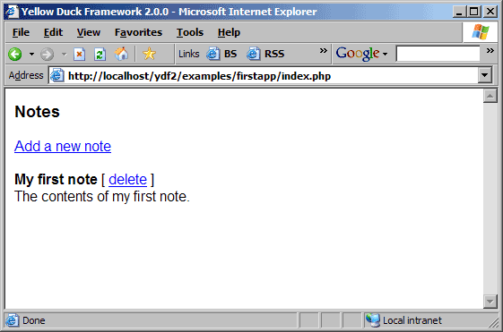
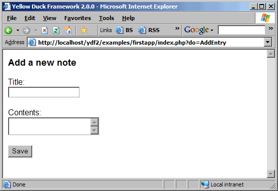

|
[ previous ]
Installing the Yellow Duck Framework |
[ contents ] |
[ next ]
How requests are processed |
Description of the application
The sample application we are going to use is a simple notebook which has three options. The following options are supported by our notebook:
After you finished this part, the finished example application will look like this:

The interface for adding a new note will look as follows:

The delete screen doesn't really have a user interface. It will remove the item from the list and reload the list once that is done.
Note: In order no to over complicate this example, we will store the notes as files on the disk instead of using a database.
Structuring the application
Before you start writing the actual code, you need to do a little bit of planning and determine which actions you will create to make your application work. In our case, we are going to make 3 different actions:
Now that we know what actions the application will be able to perform, we now need to think about how we can store the notes on disk. We will create an associative array for each note which will contain the title, body and the unique ID for the entry.
The unique ID for an entry will be created by calculating the md5 checksum of the combination of the title and the body. This will ensure that each note is unique.
Note: the example will not warn about the fact that a duplicate entry was entered. It will just overwrite the existing one. I'll leave it up to you to implement that yourself after finishing this chapter.
We will use the functions provided by the Yellow Duck Framework to load the notes from disk and save the notes to disk. In the framework, there are different objects and functions that take care of this.
After going through this example, you will have used and explored the following classes and modules in the Yellow Duck Framework:
Before we continue
Before we continue, you need to make sure the Yellow Duck Framework is properly installed and working correctly. Installation instructions can be found in 2. Installing the Yellow Duck Framework.
Creating the directory and the files
To start, create a new folder in your webroot called "firstapp". We will store all the files related to this tutorial in that folder.
In this folder, we will need to create two files for our application. We need 1 file called "index.php", which will contain the actual script that drives the application. We will also need a file which is called "index.tpl" which contains the template for this application. The template will define how the application will be presented in the browser.
By separating the actual script from the presentation, we will make the application a lot easier to maintain and understand. By using this structured way, it will be a lot easier to track down problems because you know immediately where to look.
Implementing the basis of the index.php file
The first thing we will do is to implement the basic stuff of the index.php script. As you could read in the first chapter, the name of the file determines how the class should be named.
Open the index.php file in a text editor and enter the following text in the file:
Source: index.php// Initialize the Yellow Duck Framework require_once( dirname( __FILE__ ) . '/YDFramework2/YDF2_init.php' ); // Includes require_once( 'YDRequest.php' ); require_once( 'YDFSDirectory.php' ); require_once( 'YDObjectUtil.php' ); require_once( 'YDForm.php' ); // Class definition for the index request class indexRequest extends YDRequest { // Class constructor function indexRequest() { // Initialize the parent class $this->YDRequest(); } // Default action function actionDefault() { } // Add Note action function actionAddNote() { } // Delete Note action function actionDeleteNote() { } } // Process the request require_once( dirname( __FILE__ ) . '/YDFramework2/YDF2_process.php' );
There are a number of rules to follow to get the basis of the class implemented. Let's go over each one of them:
With this implemented, you can already surf to the index.php page, but nothing will be shown. You can try the following URLs:
http://localhost/firstapp/index.php http://localhost/firstapp/index.php?do=addnote http://localhost/firstapp/index.php?do=deletenote http://localhost/firstapp/index.php?do=oops
If you typed in everything correctly, only the last URL should return an error because it's pointing to an undefined action in our class.
Improving the class constructor
We will add one thing to the class constructor, which is a reference to the data directory. Before you add the code, make a new folder called "data" in the "firstapp" folder. Also make sure that the webserver process can write into that directory. On unix systems, you can do this with the following shell command:
/home/pieter # chmod 777 data
Once you did that, add the following code to the class constructor:
// Set the path to the data directory
$this->dataDir = new YDFSDirectory( dirname( __FILE__ ) . '/data/' );
With this code, we create a new YDFSDirectory class which represents a folder on disk. We define it specifically create it in the class constructor to ensure that all the actions are able to use this object (each action needs this).
Later on, we will see that we can use this object to get a directory listing, but we will also use it to delete and create new files.
Implementing the default action
We will now implement the default action. Add the following code to the function actionDefault:
// Default action function actionDefault() { // Start with an empty list of entries $entries = array(); // Loop over the data directory contents foreach( $this->dataDir->getContents( '*.dat' ) as $entry ) { // Get the contents $entry = $entry->getContents(); // Unserialize $entry = YDObjectUtil::unserialize( $entry ); // Add it to the list of entries array_push( $entries, $entry ); } // Add the entries to the template $this->setVar( 'entries', $entries ); // Output the template $this->outputTemplate(); }
The code of this function is pretty self explanatory. Let's go over each line to see what it does:
$entries = array();This line creates a new array which will use to store the entries in.
foreach( $this->dataDir->getContents( '*.dat' ) as $entry ) {
This line line will query the data directory and get a YDFSFile
object for each file that ends with the extension "dat". The
getContents function always returns objects.
$entry = $entry->getContents();This line line will replace the variable $entry with the contents of our YDFSFile object.
$entry = YDObjectUtil::unserialize( $entry );Since the entries are serialized, we need to unserialize them to get the original object back. The YDObjectUtil::unserialize function will take care of this.
array_push( $entries, $entry );We now have the original object back, which we will just add to the list of entries.
$this->setVar( 'entries', $entries );When a new YDRequest class is instantiated, automatically a new template object is created. You can then use the setVar function from the YDRequest class to assign variables to the template. We add a new template variable called "entries" which holds the list of entries.
$this->outputTemplate();The last step is to parse the template and output it to the browser. Since we didn't specify the name of the template, it will look for a file with the same name as the script, but which has the extension "tpl" instead of "php". It will parse the template and send the result to the browser.
If you run the script now in the browser, you will see an empty screen, and no errors should be shown. You don't see anything yet since the template is still an empty file.
Implementing the template
Now that we have the default action implemented, we will change the template so that it shows the list of notes which it should do. Here's is how the template looks like to show the list of entries:
<html>
<head>
<title><?= $YD_FW_NAMEVERS ?></title>
</head>
<body>
<?php if ( $YD_ACTION == 'default' ) { ?>
<h3>Notes</h3>
<p><a href="<?= $YD_SELF_SCRIPT ?>?do=AddNote">Add a new note</a></p>
<?php if ( $entries ) { ?>
<?php foreach ( $entries as $entry ) { ?>
<p>
<b><?= $entry['title'] ?></b>
[ <a href="<?= $YD_SELF_SCRIPT ?>?do=DeleteNote&id=<?= $entry['id'] ?>">delete</a> ]
<br>
<?= $entry['body'] ?>
</p>
<?php } ?>
<?php } else { ?>
<p>No notes were found.</p>
<?php } ?>
<?php } ?>
</body>
</html>
The first thing we do in the template is to check if we are running the default action. Since we are going to combine the templates for all the different actions, we need to make sure we only show the parts relevant for the current action.
As you can see, this is a plain PHP script which only contains the code needed to display the list. As you can see, we can reference the variables as normal PHP variables and show their contents.
We also use some special variables in the script that are automatically added to the template by the framework. We use the following ones:
If you run the script now, it should tell you that no notes were found, as we didn't create any yet. There should also be a link that you can use to add a new entry. The next step is to create the form to add a new entry.
Implementing the addnote action
The next step is to implement the action that will take care of adding new items. Add the following code to the actionAddEntry function to do this:
// Add Note action function actionAddNote() { // Create the add form $form = new YDForm( 'addEntryForm' ); // Add the elements $form->addElement( 'text', 'title', 'Title:' ); $form->addElement( 'textarea', 'body', 'Contents:' ); $form->addElement( 'submit', 'cmdSubmit', 'Save' ); // Apply filters $form->applyFilter( 'title', 'trim' ); $form->applyFilter( 'body', 'trim' ); // Add a rule $form->addRule( 'title', 'Title is required', 'required' ); $form->addRule( 'body', 'Contents is required', 'required' ); // Process the form if ( $form->validate() ) { // Save the entries in an array $entry = array( 'id' => md5( $form->exportValue( 'title' ) . $form->exportValue( 'body' ) ), 'title' => $form->exportValue( 'title' ), 'body' => $form->exportValue( 'body' ) ); // Save the serialized entry to a file $this->dataDir->createFile( $entry['id'] . '.dat', YDObjectUtil::serialize( $entry ) ); // Forward to the list view $this->forward( 'default' ); // Return return; } // Add the form to the template $this->addForm( 'form', $form ); // Output the template $this->outputTemplate(); }
This action does two separate things. It knows how to show the form which is used to add a new note, and it also knows how to save a note to a file on disk which can be retrieved later on.
Let's evaluate this action step by step:
$form = new YDForm( 'addEntryForm' );This will create a new form object called "addEntryForm". We will assign elements to this object to construct the whole form.
$form->addElement( 'text', 'title', 'Title:' ); $form->addElement( 'textarea', 'body', 'Contents:' ); $form->addElement( 'submit', 'cmdSubmit', 'Save' );Now we add three elements to the form. We add a text element called "title", a textarea called "body" and a submit button called "cmdSubmit". For each of these elements, we also specify a label.
$form->applyFilter( 'title', 'trim' ); $form->applyFilter( 'body', 'trim' );To the title and body field, we also add a filter called "trim". The trim filter will remove all spaces at the beginning and the end of the form values before validating the form. We do this to make sure that e.g. if the title would be just a space, it wouldn't be considered as being valid.
$form->addRule( 'title', 'Title is required', 'required' ); $form->addRule( 'body', 'Contents is required', 'required' );For the validation, we add two rules. With these two rules, we mark the elements title and body as required elements. We also specify the error message in case the validation fails.
$this->addForm( 'form', $form );This function will assign the form object to the template. Please note that we didn't use the setVar function, but used the addForm function instead. We need to use this function because the form object needs some special treatment before it can be used in the template. Never use the setVar function to assing a form object to the template.
$this->outputTemplate();The last step is to parse and output the template which is done by executing the outputTemplate function.
Note: I specifically didn't explain the part which save the note to a file, as it's not important yet. You first need to understand how this works before we can add the code for saving the note to disk.
Before you can run the form, we need to add the code for the form to the template. Add the following stuff just before the "</body>" tag in the template:
<?php if ( $YD_ACTION == 'addnote' ) { ?>
<h3>Add a new note</h3>
<?php if ( $form['errors'] ) { ?>
<p style="color: red"><b>Errors during processing:</b>
<?php foreach ( $form['errors'] as $error ) { ?>
<br><?= $error ?>
<?php } ?>
</p>
<?php } ?>
<form <?= $form['attributes'] ?>>
<p>
<?= $form['title']['label'] ?>
<br>
<?= $form['title']['html'] ?>
</p>
<p>
<?= $form['body']['label'] ?>
<br>
<?= $form['body']['html'] ?>
</p>
<p>
<?= $form['cmdSubmit']['html'] ?>
</p>
</form>
<?php } ?>
If we a look at that code, we see that it will only be shown if the current action is called "addnote" (always in lowercase!). The first part will take care of showing the errors if there are any.
The errors are always found in the $form['error'] array. this array is just a list of all the different error messages. In this example, we use a little but of stylesheets to make them appear in red.
Then, the code for the form itself is added. We first define the form tag, and use the $form['attributes'] variable to automatically add all the parameters of the form such as the action and method. The framework is smart enough to take care of that automatically.
Then we will add the different elements. Each element can be referenced as $form[elementname]. In this example, we use the label and html properties of each element. The label property contains the label as specified when you created the form object. The html property contains the HTML version of the element.
This is the only code we need to add for the form. The framework will take care of remembering what was entered in each field and displays it when needed. It will also take care of the error messages.
Now that we have the basis of the form, you can surf to the index.php page and see what happens. If you submit the form, you will see that the values are remembered accross submits, and that the right errors are raised if the input was not valid.
Let's examine the code that saves the entry to disk. We'll go over it step by step.
if ( $form->validate() )With this, we can check if the form was validated succesfully. The form is only validated when all the validation rules were passed.
$entry = array(
'id' => md5(
$form->exportValue( 'title' ) . $form->exportValue( 'body' )
),
'title' => $form->exportValue( 'title' ),
'body' => $form->exportValue( 'body' )
);
This code will create a new associative array with the information
of the entry. We can use the form's exportValue function to get the
value of a specific field of the form. We used the md5 function to
create the unique ID for the entry.
$this->dataDir->createFile(
$entry['id'] . '.dat', YDObjectUtil::serialize( $entry )
);
The next line does two things. First, it will serialize the array of
the object. This means it's converted into code which can be saved
to a file, and which can be read later on again to get the original
array back. This function is part of the YDObjectUtil module. After
we have the array as a serialized item, we can use the createFile
function from the YDFSDirectory object to dump it to a file. The
file name will be the id of the entry with the extension "dat".
$this->forward( 'default' );Now that the note is saved to disk, we need to show the list of notes again. We have two options here. Either you do a redirect, which will redirect you to the url of the default action, but this requires two HTTP interactions. A lot faster is to forward the execution to a different action. The difference is that forwarding happens in the same request.
return;It's very important to add the return statement, since otherwise, the form will be displayed again.
Note: one could say that instead of forwarding the request to a different action, you could just call the function for that action. Unfortunately, that doesn't work, since the framework will not know that the current action has been changed.
If you run the script now, you will be able to add notes and display them. Also try to add a note without a title or description, and check that it is showing the right errors. Also check the contents of the data directory to see that the entries are correctly saved in there.
Implementing the deletenote action
To finish off, we will create the action that can delete a note. This action will take 1 parameter from the URL, which is called ID. This entry will contain the unique ID of the entry.
To implement this action, add the following code to the actiondeletenote function:
// Delete note action function actionDeleteNote() { // Delete the file related to the entry $this->dataDir->deleteFile( $_GET['id'] . '.dat' ); // Forward to the list view $this->forward( 'default' ); }
Let's go over this action to see how it works:
$this->dataDir->deleteFile( $_GET['id'] . '.dat' );With the deleteFile function from the YDFSDirectory object, we can delete the file for this specific note. We find the id of the note in the $_GET['id'] variable, which was passed with the URL.
$this->forward( 'default' );After the deletion of the file, we just forward the request to the default action again to show the list of the notes.
After adding this code, you can run the sample again and try to delete a note. If you delete the note, it should disappear from the list and the file should also be removed from the data directory.
Note: there are some functions that could be added to this action. First, it could check if there was an ID given or not. If not, you could forward the request to the default action, or you could show an error message. You could also add some checking to see if the entry exists or not before deleting it. Another option is to add a confirmation screen to prevent that someone accidently deletes a note.
The complete application
You will find a complete working copy of this application in the firstapp folder inside the examples folder of the Yellow Duck Framework distribution.
|
[ previous ]
Installing the Yellow Duck Framework |
[ contents ] |
[ next ]
How requests are processed |